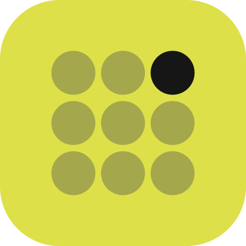
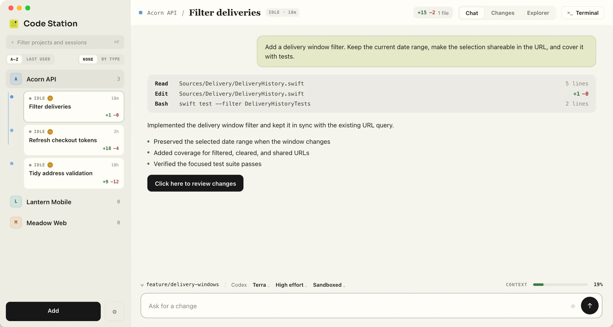
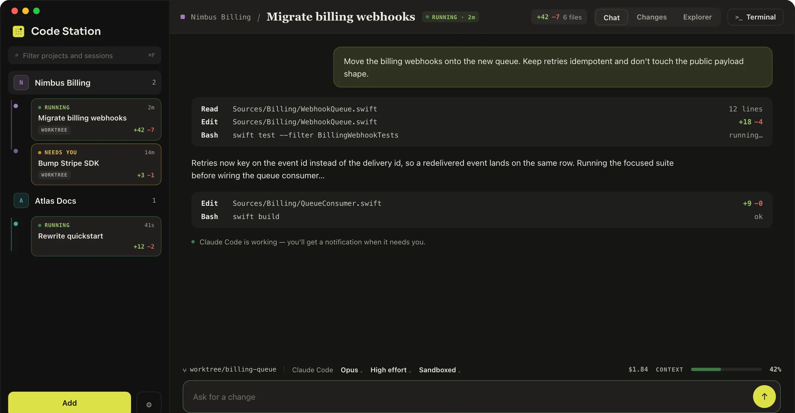
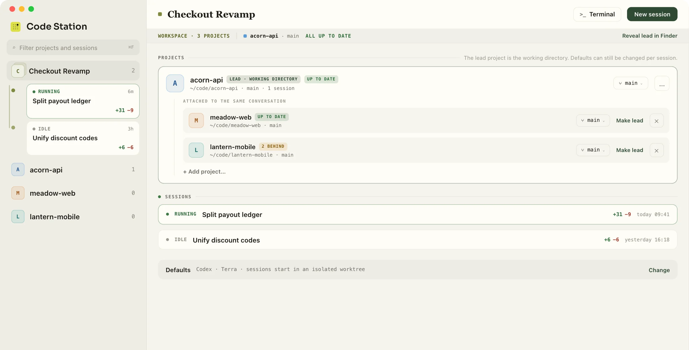
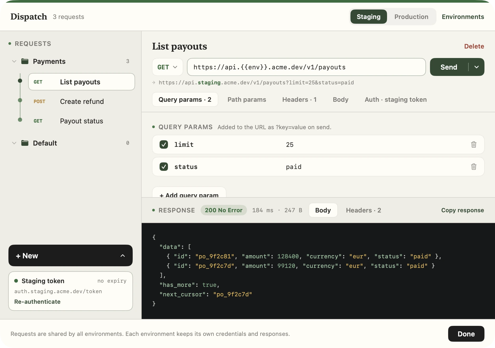
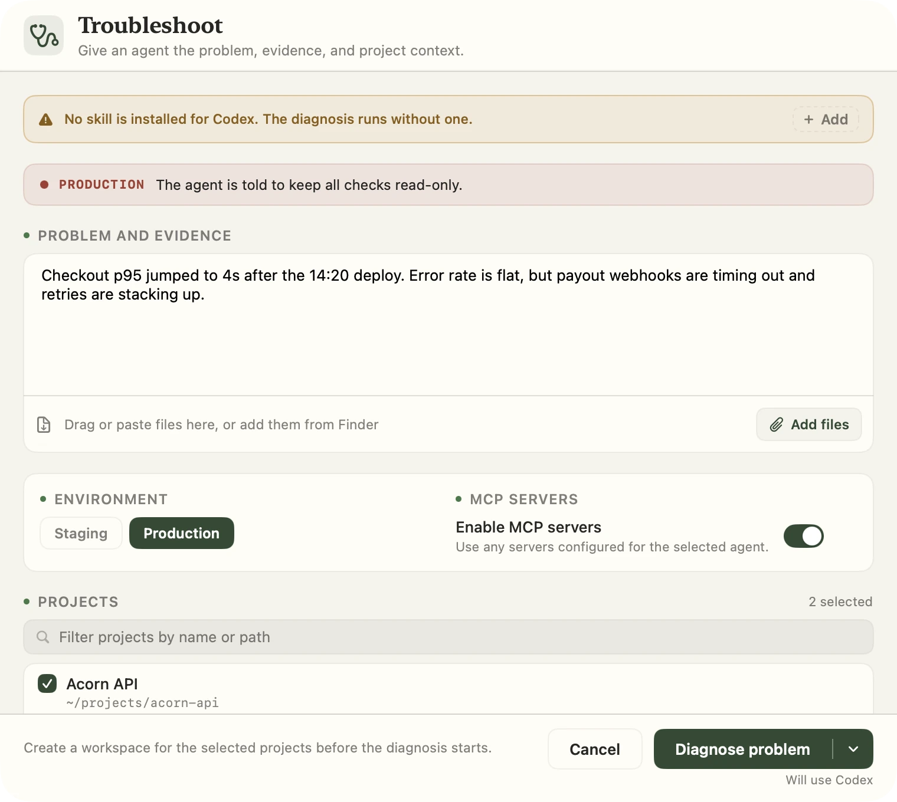

Worktree sessions
Run in the project folder when changes should land there, or in an isolated checkout and branch when they should not. Worktree sessions run side by side without touching the same files.

Code Station FOR macOSRun Codex and Claude Code across every project - conversation, changes, files, and terminal in one window.

Pick the agent, model, and effort per session, then run them in parallel, each in its own Git worktree.

Enable the experimental Design mode for a screen, flow, diagram, deck, or prototype. The agent studies the real project, builds beside the conversation, and keeps refining the same interactive artifact.
SYSTEM STORY · 07
One tap. Six systems. A promise kept in under a second.
01 · THE PROMISE
Group projects into a workspace. The lead is the working directory and the rest join the same conversation.

A built-in HTTP client with staging and production environments, OAuth in the Keychain, and {{env}} that resolves itself.

Guided troubleshooting with skills, MCP servers, and read-only guard rails when the environment is live.

The parts you reach for between prompts, in the same place as the conversation.
Run in the project folder when changes should land there, or in an isolated checkout and branch when they should not. Worktree sessions run side by side without touching the same files.
Pick exactly the files that go into a commit, amend the last one while it is still unpushed, and read recent commits with their full diffs.
Chat code blocks, file previews, and diffs are syntax highlighted, with no extra dependencies.
Take a Claude Code conversation back to an earlier prompt and send it again, or fork it into a new session from that point.
Every session shows its spend next to the context meter. Any agent's settings can hide the figure.
A system notification when a session finishes a turn or stops to ask something. Clicking it opens that session.
Configure servers once and register them with Codex, Claude Code, or both. Tag each one with the environment it belongs to.
Install and update agent skills from your organisation's marketplace.
Save, run, and stop shell commands from the status row, and inspect or stop running containers without leaving the app.
The build script makes a double-clickable, ad-hoc signed bundle you can drop in Applications.
What you need
codex or claude$ git clone https://github.com/teya-engineering/code-station.git
$ cd code-station
$ ./build-app.sh
$ open "build/Teya Code Station.app"The parts that belong to your organisation rather than to the app - the identity provider your APIs sign in against, your environments, your Grafana instances, the skills marketplace, the commands worth having on hand - all live in one optional settings file the app reads at startup. Every section is optional, and so is the file.
The first-launch wizard can read it from a local file or clone it from a Git repository, and build-app.sh can fold it into the bundle so the app you hand to your team is already set up. See the site configuration guide and the blank-slate example.